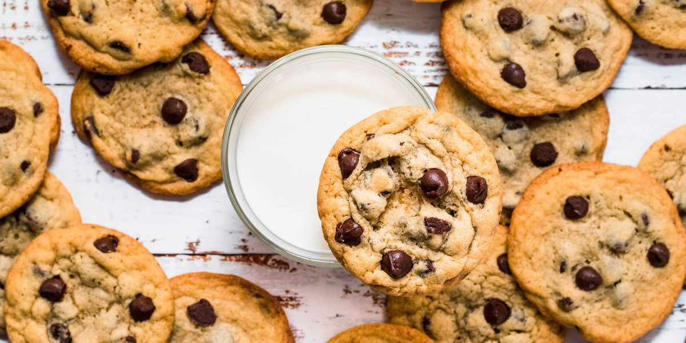

Chocolate Chip Cookies
This is the best chocolate chip cookie recipe ever! Simple ingredients, quick to prepare and amazingly delicious. These chocolate chip cookies turn out perfectly every single time!

Ingredients
- 1 cup butter, softened
- 1 cup white sugar
- 1 cup packed brown sugar
- 2 large eggs
- 2 teaspoons vanilla extract
- 1 teaspoon baking soda
- 2 teaspoons hot water
- ½ teaspoon salt
- 3 cups all-purpose flour
- 2 cups semisweet chocolate chips
- 1 cup chopped walnuts
Directions
- Preheat oven to 350 degrees F (175 degrees C).
- Cream together the butter, white sugar, and brown sugar until smooth. Beat in the eggs one at a time, then stir in the vanilla. Dissolve baking soda in hot water. Add to batter along with salt. Stir in flour, chocolate chips, and nuts. Drop by large spoonfuls onto ungreased pans.
- Bake for about 10 minutes in the preheated oven, or until edges are nicely browned.
Nutrition Facts
Per Serving:
297.8 calories; protein 3.6g 7% DV; carbohydrates 38.9g 13% DV; fat 15.6g 24% DV; cholesterol 35.8mg 12% DV; sodium 165.8mg 7% DV.